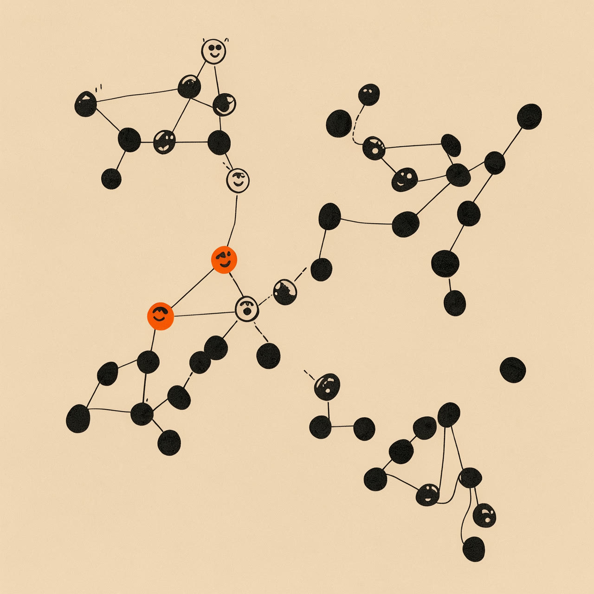

Comment mSLICE est pensé, expliqué simplement : les idées de départ, la construction, l'analyse des scènes, des sons et des visages, la sécurité, les mesures.
How mSLICE is designed, explained simply: the starting ideas, how it is built, scene, sound and face analysis, security, measurements.
Version 1.3 · 24 novembre 2026 · November 24, 2026 Starbudweiser & Claude Code (Anthropic) · MIT · github.com/starbudweiser/mSLICE
Sommaire · Contents
Sommaire / Contents
1Une appli, un usage One app, one job3
2Comment c'est construit How it is built5
3Trouver : voir et entendre Find: seeing and hearing6
4Les personnages Characters9
5Sécurité et vie privée Security and privacy12
6L'agent, facultatif The agent, optional13
7Ce qui a été mesuré What was measured14
8Choix et limites Choices and limits15
DESKTOP MAC TOOLKIT · v1.32
1
Les idées de départ · The starting ideas
Une appli, un usage
One app, one job
mSLICE sert à couper : retirer un début inutile, une fin gardée « par sécurité », ou sortir quelques passages d'un long enregistrement. Rien de plus, mais très bien.
mSLICE is for cutting: drop a useless opening, an ending kept “just in case”, or pull a few passages out of a long recording. Nothing more, but done very well.
mSLICE copie la vidéo telle quelle au lieu de la recalculer. Un gros fichier est coupé en moins d'une seconde, sans perte de qualité.
Rester fidèle
Vos fichiers d'origine ne sont jamais modifiés. Chaque export crée de nouveaux fichiers, sans rien écraser.
Garder la main
La détection de scènes, de sons et de personnages ne fait que proposer des morceaux. C'est vous qui décidez lesquels garder.
Be fast
mSLICE copies the video as it is instead of recalculating it. A big file is cut in under a second, with no loss of quality.
Stay faithful
Your original files are never modified. Every export creates new files and overwrites nothing.
Stay in control
Detecting scenes, sounds and characters only suggests pieces. You decide which ones to keep.
< 1 s
pour couper un gros fichier
25 s
pour analyser 28 min de vidéo
22 s
pour reconnaître les personnages de 28 min
0 %
de processeur quand l'appli ne fait rien
< 1 s
to cut a big file
25 s
to analyse 28 min of video
22 s
to recognise the characters in 28 min
0 %
CPU when the app is idle
DESKTOP MAC TOOLKIT · v1.34
mSLICE · Conception · DesignConstruction · Construction
Comment c'est construit · How it is built
Des briques simples
Simple building blocks
Figure 1 — Les parties de mSLICE. · Figure 1 — mSLICE's parts.
En clair — l'interface pilote des briques simples (lecteur, export, recherche). Le gros calcul de l'analyse tourne dans un petit programme à part, qui rend toute sa mémoire en se terminant.
In plain words — the interface drives simple blocks (player, export, search). The heavy analysis runs in a small separate program that gives back all its memory when it ends.
Le même moteur sert l'appli et les agents (serveur MCP) : ils font exactement la même chose, avec les mêmes garde-fous.
The same engine serves the app and the agents (MCP server): they do exactly the same thing, with the same guardrails.
DESKTOP MAC TOOLKIT · v1.35
2
Trouver · Find
Trouver : voir et entendre
Find: seeing and hearing
Un bouton « Analyser » repère les plans, les scènes et les sons d'un fichier avec les outils déjà présents dans macOS. Rien n'est téléchargé, rien ne sort du Mac.
One “Analyze” button spots a file's shots, scenes and sounds with the tools already built into macOS. Nothing is downloaded, nothing leaves your Mac.
mSLICE · Conception · DesignAnalyse · Analysis
L'analyse · Analysis
L'analyse, en bref
Analysis in brief
Figure 2 — Une seule lecture du fichier nourrit les trois détecteurs. · Figure 2 — One read of the file feeds the three detectors.
Français
mSLICE lit le fichier une seule fois. Il note où le montage change de plan, ce qu'on voit (feu, foule, nuit…) et ce qu'on entend (musique, rires, paroles…).
Le résultat est une petite fiche, d'environ 6 Ko par minute, gardée pour la prochaine ouverture. Tout se passe sur votre Mac.
English
mSLICE reads the file only once. It notes where the edit changes shot, what you see (fire, crowd, night…) and what you hear (music, laughter, speech…).
The result is a small record, about 6 KB per minute, kept for the next time. Everything happens on your Mac.
Seules les coupures franches sont détectées, pas les fondus enchaînés.
Only hard cuts are detected, not dissolves.
DESKTOP MAC TOOLKIT · v1.37
mSLICE · Conception · DesignCritères · Criteria
Les critères · Criteria
Combiner les critères
Combining criteria
Figure 3 — « Le personnage ET le feu, SAUF quand il y a de la musique, en plans entiers ». · Figure 3 — “The character AND the fire, EXCEPT when there is music, whole shots”.
ET : les deux à la fois (ici le personnage et le feu).
SAUF : on écarte les passages où l'on entend de la musique.
Plans entiers : on garde le plan complet, de son premier à son dernier instant.
Les passages très proches sont réunis ; « Ajouter » se défait d'un seul ⌘Z.
AND: both at once (here the character and the fire).
EXCEPT: passages with music are dropped.
Whole shots: the full shot is kept, from its first to its last moment.
Passages very close together are joined; “Add” undoes with a single ⌘Z.
DESKTOP MAC TOOLKIT · v1.38

3
Personnages · Characters
Les personnages
Characters
macOS ne sait pas reconnaître les visages. mSLICE propose donc, en option, un petit modèle externe : téléchargé seulement si vous l'acceptez, vérifié, supprimable à tout moment.
macOS cannot recognise faces. So mSLICE offers, as an option, a small external model: downloaded only if you agree, verified, removable at any time.
Figure 5 — Reconnaître les personnages, étape par étape. · Figure 5 — Recognising characters, step by step.
1
Une image par seconde : on repère les visages.
2
Chaque visage est redressé puis transformé en 512 nombres : son « empreinte ».
3
Les visages qui se suivent dans un même plan sont réunis ; les empreintes qui se ressemblent forment un personnage.
4
Règle d'or : deux visages d'une même image ne sont jamais le même personnage.
1
One frame per second: faces are spotted.
2
Each face is straightened, then turned into 512 numbers: its “fingerprint”.
3
Faces that follow each other in one shot are joined; similar fingerprints form a character.
4
Golden rule: two faces from the same frame are never the same character.
1 845
visages trouvés en 28 min
50
personnages
22 s
pour toute la vidéo
278 Mo
de mémoire au plus fort
1 845
faces found in 28 min
50
characters
22 s
for the whole video
278 Mo
memory at the peak
DESKTOP MAC TOOLKIT · v1.311
mSLICE · Conception · DesignSécurité · Security
Sécurité · Security
Sécurité et vie privée
Security and privacy
Tout se passe sur votre Mac. La seule connexion est le téléchargement du modèle, que vous déclenchez vous-même.
Everything happens on your Mac. The only connection is the model download, which you start yourself.
Protection
Ce qu'elle fait
Téléchargement
HTTPS seulement, taille limitée, signature (SHA-256) vérifiée avant l'installation.
Archive du modèle
Son contenu est inspecté avant d'être ouvert ; seuls le modèle, sa licence et sa notice sont gardés.
Avant chaque usage
La signature du modèle installé est recalculée : un fichier remplacé ou abîmé n'est jamais chargé.
Fichiers d'analyse
Refusés s'ils sont tronqués ou incohérents : ils ne peuvent pas faire planter l'appli.
Agent
Crée seulement de nouveaux fichiers, ne supprime ni n'écrase rien, ne télécharge jamais le modèle.
Programme à part
Un plantage d'un modèle d'Apple ne touche pas l'appli ; on peut tout annuler à tout moment.
Protection
What it does
Download
HTTPS only, limited size, signature (SHA-256) checked before installing.
Model archive
Its content is inspected before opening; only the model, its licence and notice are kept.
Before each use
The installed model's signature is recomputed: a replaced or damaged file is never loaded.
Analysis files
Refused if truncated or inconsistent: they cannot crash the app.
Agent
Only creates new files, deletes or overwrites nothing, never downloads the model.
Separate program
A crash in an Apple model does not touch the app; everything can be cancelled at any time.
DESKTOP MAC TOOLKIT · v1.312
mSLICE · Conception · DesignAgent · Agent
Agent · Agent
L'agent, facultatif
The agent, optional
Figure 6 — D'un agent comme Claude Code jusqu'à vos fichiers. · Figure 6 — From an agent such as Claude Code to your files.
Français
L'agent est désactivé par défaut (Réglages ▸ Agent). Un panneau de discussion et un serveur MCP donnent accès aux mêmes 21 outils : lire des informations (probe_media, find_scenes…), poser des morceaux (set_segments…), exporter (export…).
English
The agent is off by default (Settings ▸ Agent). A chat panel and an MCP server give access to the same 21 tools: read information (probe_media, find_scenes…), place pieces (set_segments…), export (export…).
Exemple : « garde toutes les apparitions d'Alma, sauf quand il y a de la musique, et fusionne ».
Example: “keep every appearance of Alma, except when there is music, and merge”.